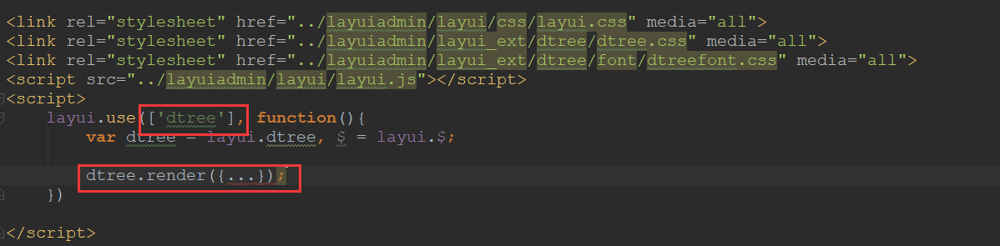

dtree 数据树文档 - layui.dtree
提供了集成到layuiadmin-std版本的参考（layuiadmin-pro版本同样适用）
模块加载名称：dtree
-
第一步：下载解压最新的dtree压缩包
- 将dtree的压缩包解压后，看到的目录结构应该是这样的：

-
第二步：将dist/dtree.js 或者 dtree/dtree.js 文件放在layuiadmin的lib/extend目录中
-
第三步：修改layuiadmin的config.js文件，将dtree.js添加进配置
-
第四步：使用dtree
- 引入依赖layui的css,js，引入dtree依赖的css（css位置可以自定义）（如果需要移动font文件夹，则该文件夹需要整体移动）
- 通过上述的步骤，即可直接在layui.use中使用dtree了。
- 注意：必须先引入index模块，才能直接使用dtree模块，index模块不能省略。
- 


layuiadmin-pro版本的集成方式同上。